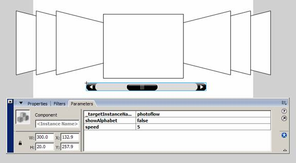
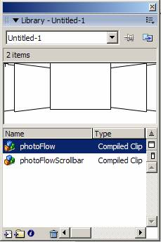
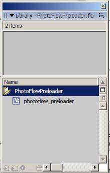
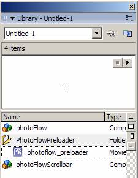
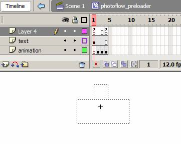

The photoFlow includes a built-in preloader to show the loading progress of each image. The look and functionality of the preloader can be customized to suit your needs.
1. Open your Flash file that contains your project using the photoFlow.

2. Press Ctr+L (Win) or Cmnd+L (Mac) to open the Library panel.

3. From the menu in Flash, select Window > Common Libraries > photoFlowPreloader

4. Drag the PhotoFlowPreloader folder from the common library into the library of your current Flash file that you opened at step 2. You may now close the common library as you will only be working with the library in your current Flash file.

5. Double click on the photoflow_preloader movie clip that's in the PhotoFlowPreloader folder in your library in order to edit it. This is how the timeline of the preloader will look:

6. You can edit the textfield for the preloader as well as the animation. You may also wish to edit the funtionality of the preloader by changing the code.
Changing the preloader code
The code for the preloader can be found in frame 1 on the timeline. Two functions are used here: onStartLoad and onUpdate. In the default preloader MovieClip, the script looks like this:
function onUpdate(percent:Number){
percent_txt.text=percent;
}
function onStartLoad(obj:Object,w,h){
name_txt.text=obj.name;
this._x=w/2;
this._y=h/2;
this._visible=true;
}
this._visible=false;
Frame 4 has a goto action:
gotoAndPlay(2);
The onUpdate function has the parameter percent which indicates the current percent loaded. This function will trigger every time the percentage updates.
Each time the onUpdate function is triggered it will update the text of preloader.
The onStartLoad function has 3 parameters: obj is the information object of the image, w and h are the width and height of image. This function is used to initialize the preloader.
You can also create your own preloader without modifying the default preloader. To do this, you just need to give the linkage identifier photoflow_preloader to your preloader MovieClip and remember to check the Export at first frame checkbox.